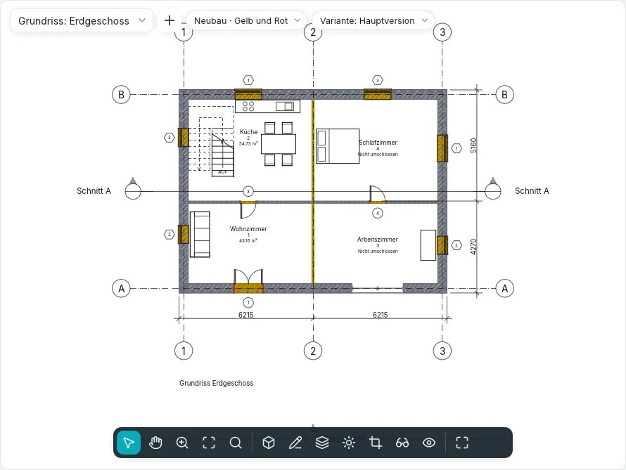

Phasen und Abbruch
Ein Umbau wird in Phasen gezeichnet: der Bestand, der Neubau und bei Bedarf Zwischenphasen. Jedes Modellelement wird in einer Phase erstellt und kann in einer späteren Phase abgebrochen werden; jede Ansicht zeigt das Modell so, wie es in ihrer Phase ist, mit einem Phasenfilter, der festlegt, wie neue, bestehende, abgebrochene und temporäre Elemente aussehen. Ein einziges Modell liefert so den Bestandsplan, den Abbruchplan, den Entwurfsplan und den Vergleichsplan in Gelb und Rot.
Die Phasenstatus
Die Phase der Ansicht und die beiden Phasen eines Elements ergeben seinen Status in dieser Ansicht:
| Status | Das Element… |
|---|---|
| Neu | wird in der Phase der Ansicht erstellt |
| Bestehend | wird in einer früheren Phase erstellt und bis zur Phase der Ansicht nicht abgebrochen |
| Abgebrochen | wird in einer früheren Phase erstellt und in der Phase der Ansicht abgebrochen |
| Temporär | wird in der Phase der Ansicht erstellt und abgebrochen |
Ein Element, das nach der Phase der Ansicht erstellt oder vor ihr abgebrochen wird, gibt es in dieser Ansicht nicht.
Die Projektphasen
Projekt ▸ Phasen ▸ Phasen (BIMopen-Stil: Projekt ▸ Phasen…) öffnet den Dialog Phasen mit drei Registerkarten. Ein neues Projekt hat Bestand und Neubau.
In der Registerkarte Projektphasen ist jede Phase eine nummerierte Zeile, von der Vergangenheit (oben) bis zur Zukunft (unten), mit Name und Beschreibung. Ein Klick auf die Nummer wählt die Zeile aus.
- Davor einfügen und Danach einfügen fügen neben der ausgewählten Phase eine neue ein, fortlaufend benannt (Phase 1, Phase 2…). Phasen lassen sich nicht umsortieren: fügen Sie sie an der richtigen Stelle ein.
- Zusammenführen mit ▸ Vorherige oder Nächste entfernt die ausgewählte Phase: die Elemente, Ansichten, Bauteillisten und Räume, die sie verwendeten, gehen auf die Phase über, mit der sie zusammengeführt wird.
Namen dürfen weder leer noch doppelt sein. OK übernimmt die drei Registerkarten zusammen, in einem einzigen Schritt, den Rückgängig (Strg+Z) zurücknimmt; Abbrechen im Dialog ändert nichts. Der Schalter Vorschau in der Kopfzeile zeigt die aktive Ansicht mit den noch nicht bestätigten Änderungen, mit dem unter der Vorschau gewählten Filter.
Die Phasenfilter
In der Registerkarte Phasenfilter legt jeder Filter für jeden Status (Neu, Bestehend, Abgebrochen, Temporär) fest, ob die Elemente Nach Kategorie gezeichnet werden (wie es die Stile und Überschreibungen der Ansicht sagen), Überschrieben (mit den Grafiküberschreibungen des Status) oder Nicht anzeigen (sie werden weder gezeichnet noch ausgewählt).
| Vordefinierter Filter | Neu | Bestehend | Abgebrochen | Temporär |
|---|---|---|---|---|
| Alles anzeigen | Nach Kategorie | Überschrieben | Überschrieben | Überschrieben |
| Abgebrochen + neu anzeigen | Nach Kategorie | Nicht anzeigen | Überschrieben | Überschrieben |
| Neu anzeigen | Nach Kategorie | Nicht anzeigen | Nicht anzeigen | Nicht anzeigen |
| Vorherige + abgebrochen anzeigen | Nicht anzeigen | Nach Kategorie | Überschrieben | Nicht anzeigen |
| Vorherige + neu anzeigen | Nach Kategorie | Nach Kategorie | Nicht anzeigen | Nicht anzeigen |
| Vorherige Phase anzeigen | Nicht anzeigen | Überschrieben | Überschrieben | Nicht anzeigen |
| Gelb und Rot | Überschrieben | Überschrieben | Überschrieben | Nicht anzeigen |
Neu fügt einen Filter hinzu (alles nach Kategorie), Löschen entfernt ihn: verwendet eine Ansicht ihn, fragt der Dialog vorher nach, und diese Ansichten gehen auf Keiner über. In der ersten Phase zeigt Vorherige Phase anzeigen nichts. Um alles ohne Überschreibungen zu sehen, wählt man Keiner als Filter der Ansicht.
Die Grafiküberschreibungen
Die Registerkarte Grafiküberschreibungen hat eine Zeile pro Status: Projektionslinien und Schnittlinien (Stärke, Farbe, Linienmuster), Oberflächenmuster und Schnittmuster (sichtbar, Muster, Farbe; Überschreibungen löschen kehrt zu denen der Kategorie zurück), Halbton (Linien, Muster und Füllungen zum Hintergrund hin aufgehellt, die Materialfarben der schattierten Ansichten nicht) und Material (seine Schattierungsfarbe und sein Aussehen in schattierten und realistischen Ansichten).
Sie gelten dort, wo ein Filter Überschrieben sagt. Die Filter der Ansicht und die Grafik pro Element haben Vorrang vor ihnen. Die Voreinstellungen folgen der italienischen Praxis: bestehend grau, abgebrochen gelb und gestrichelt, neu rot, temporär gepunktet im Halbton.
Die Phase der Ansichten
Grundrisse, Deckenpläne, Schnitte, Gebäudeansichten, 3D-Ansichten, Flächenpläne und Bauteillisten haben in der Gruppe Phasen ihrer Eigenschaften Phasenfilter und Phase. Eine neue Ansicht übernimmt die letzte Phase und Alles anzeigen; Ansicht duplizieren behält Phase und Filter, danach lässt sich jedes ändern: dasselbe Geschoss zu zwei Zeitpunkten. Eine Ansichtsvorlage kann den Filter festlegen (Phasenfilter unter den einbezogenen Eigenschaften), nie die Phase.
Im BIMopen-Stil öffnet die Beschriftung Phase · Filter oben in der Ansicht ein Menü, das das eine oder das andere ändert.
Die Phasen der Elemente
Jedes Modellelement (Wände, Türen, Fenster, Bauteile, Geschossdecken, Dächer, Decken, Stützen, Treppen, Geländer, Rampen, Vorhangfassaden) hat in der Gruppe Phasen seiner Eigenschaften:
- Erstellungsphase: die der Ansicht, in der das Element erstellt (oder eingefügt) wurde;
- Abbruchphase: Keine oder die Phase, in der es abgebrochen wird; angeboten werden nur die Erstellungsphase und die späteren, und Keine hebt den Abbruch auf.
Beschriftungen, Bemaßungen, Texte und Detailelemente haben keine Phasen: sie gehören zu ihrer Ansicht. Die Teilwände einer gestapelten Wand und die Teile einer gekrümmten Wand folgen der ganzen Wand. Ältere Projekte mit den zwei festen Phasen der Wände öffnen sich mit den gleichnamigen Phasen.
Abbrechen
Ändern ▸ Formen ▸ Abbrechen (BIMopen-Stil: Ändern ▸ Abbrechen) arbeitet in Grundrissen, Schnitten, Gebäudeansichten und 3D-Ansichten. Neben dem Cursor erscheint der Hammer, und hervorgehoben wird, was in der Phase der Ansicht abgebrochen werden kann. Ein Klick bricht das Element in dieser Phase ab, in allen Ansichten derselben Phase:
- eine abgebrochene Wand nimmt ihre Türen und Fenster mit;
- ein in derselben Phase erstelltes Element wird temporär;
- zeigt der Filter der Ansicht keine abgebrochenen Elemente, verschwindet das Element sofort.
Sind bereits Elemente ausgewählt, bricht Abbrechen sie alle sofort ab und wartet dann auf weitere Klicks. Esc oder Ändern beenden das Werkzeug; jeder Klick ist ein Rückgängig-Schritt.

Die Füllungen
Wo eine Tür oder ein Fenster abgebrochen wird und die Wand bleibt, wird die Öffnung ab der Abbruchphase gefüllt, mit den Schichten der Wand: das ist im Grundriss, im Schnitt, in der Gebäudeansicht und in 3D zu sehen. Wo eine Öffnung in einer späteren Phase als die Wand entsteht, ist die Wand in den früheren Phasen ganz.
Eine Füllung wird mit einem Klick ausgewählt, zum Beispiel in einem Schnitt mit Vorherige + neu anzeigen: ihr Typ lässt sich durch einen anderen Basiswandtyp ersetzen, um eine andere Ausfachung zu zeichnen; die Füllung der Phasen vor der Öffnung hat immer den Aufbau der Wand. Füllungen lassen sich weder verschieben, drehen, spiegeln, kopieren noch einfügen: sie folgen ihren Öffnungen.
Räume und Bauteillisten nach Phase
Ein Raum gehört zur Phase der Ansicht, in der er platziert wird (seine Phase ist schreibgeschützt): ein Grundriss zeigt, beschriftet und wählt nur die Räume seiner Phase, und dieselbe Nummer kann in verschiedenen Phasen vorkommen. Ein Raum wird von den Elementen begrenzt, die am Ende seiner Phase bestehen: der Abbruch einer Trennwand ändert die Räume dieser Phase und der späteren, nicht die des Bestands. In Zwischenablage kopieren einen Raum aus einer Ansicht und In aktiver Ansicht einfügen in eine Ansicht einer anderen Phase: der Raum geht mit denselben Eigenschaften auf diese Phase über.
Eine Bauteilliste hat Phase und Phasenfilter wie die Ansichten (in Neue Bauteilliste wird die letzte Phase vorgeschlagen): die Zeilen sind die Elemente, wie sie in dieser Phase sind, diejenigen, die der Filter zeigt. Vorherige + abgebrochen anzeigen listet die zu entfernenden Türen auf, Neu anzeigen die zu kaufenden. Die Felder Erstellungsphase und Abbruchphase lassen sich anzeigen, sortieren, filtern und in der Zelle bearbeiten.
Die Ansichtsfilter haben Regeln für Erstellungsphase und Abbruchphase: gleich oder ungleich, und kleiner als / größer als für früher oder später in der Reihenfolge der Phasen.
Phasenlegenden
Ein Legendenbauteil hat die Eigenschaft Phasenstatus: mit Bestehend, Abgebrochen, Neu oder Temporär wird das Muster mit den Überschreibungen dieses Status gezeichnet, neben seinem Text.
Austausch
- IFC: bei einem Projekt mit Phasen fragt Exportieren ▸ IFC nach der Phase: Zu exportierende Phase (die letzte wird vorgeschlagen). Geschrieben werden die Elemente, die in dieser Phase bestehen, jedes mit seinem Status (Status: NEW, EXISTING, DEMOLISH, TEMPORARY) im gemeinsamen Eigenschaftssatz seiner Klasse und mit seinen beiden Phasen nach Namen. Beim Öffnen einer IFC-Datei erhalten die Objekte mit diesem Status die entsprechenden Phasen des Projekts.
- DWG und DXF: in CAD-Formate exportieren hängt die Option Phasenstatus im Layernamen an den Layer der Kategorie das Suffix des Status an (-EXST, -DEMO, -NEWW, -TEMP): eine abgebrochene Wand kommt auf A-WALL-DEMO.
Die Zuordnung der Phasen verknüpfter Modelle kommt mit den verknüpften Modellen.